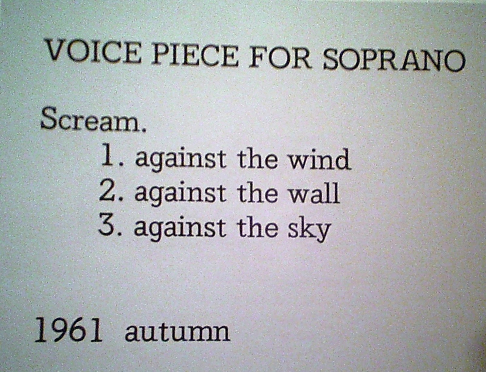

What Computational Form Is
Computational Form is design that results from following a set of instructions, rather than manual creation.
Computation in Image
Desmond Paul Henry - Untitled - 1962


Golan Levin - Floccular Portraits - 1999
 Floccular Portraits on Artist’s Site
Floccular Portraits on Artist’s Site
Computation in Video
Craig Reynols - Boids Simulation - 1986

Giuseppe Randazzo - Transmutation - 2012
 Video Transmutation on Artist’s Site
Video Transmutation on Artist’s Site
Computation in Sound
Yoko Ono - Voice Piece for Soprano - 1961
 Voice Piece for Soprano @ Moma
John Cage - 4’33" - 1952
 4’33" on moma.org 4’33" on wikipedia
4’33" on moma.org 4’33" on wikipedia